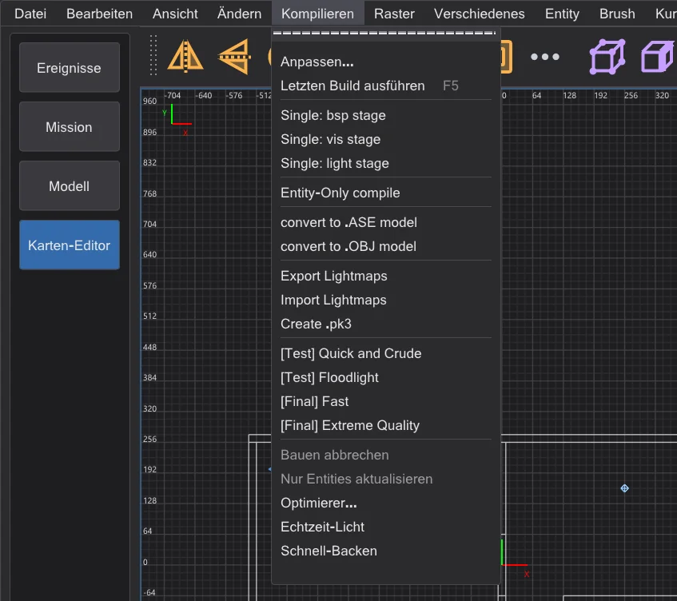
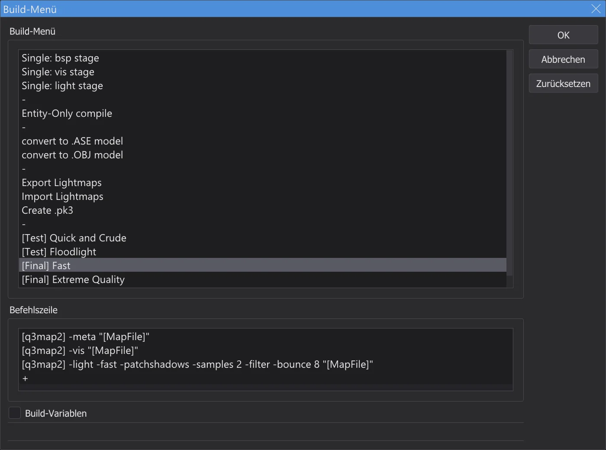
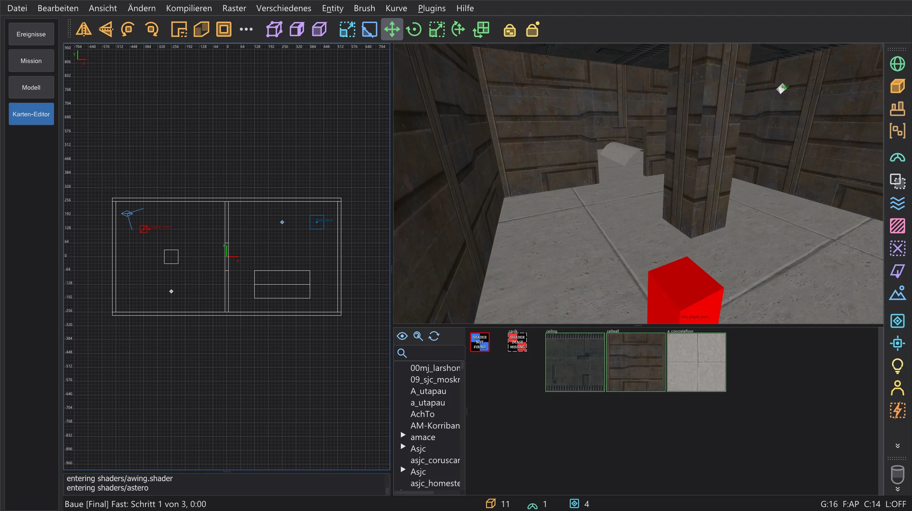
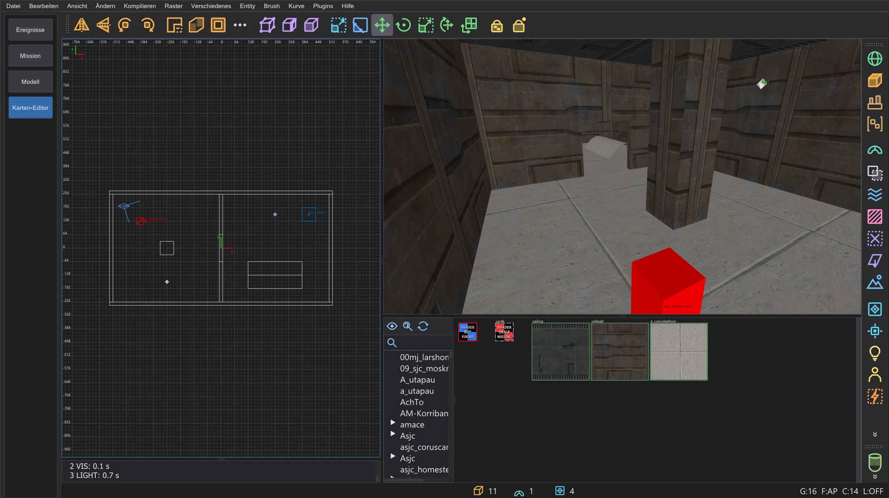
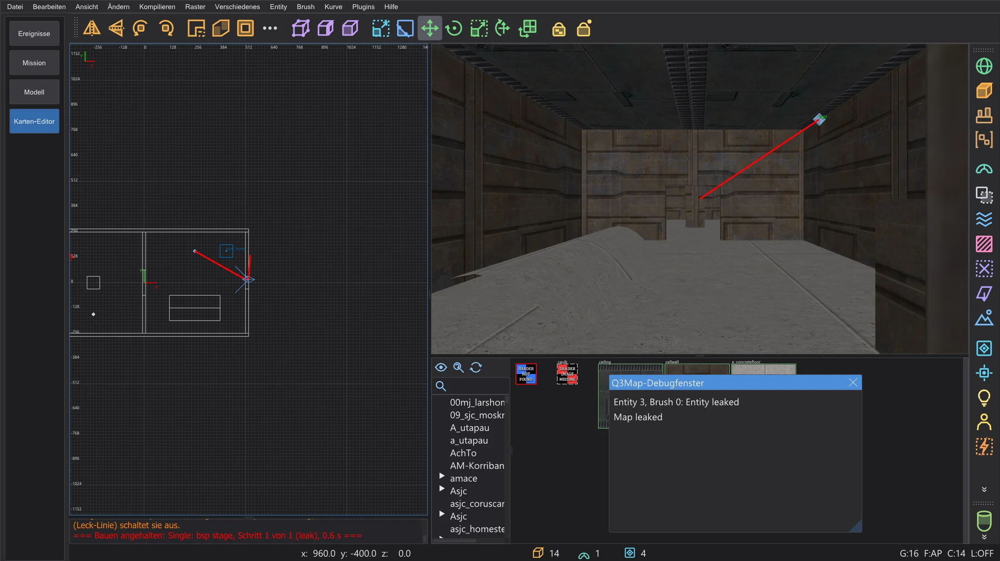
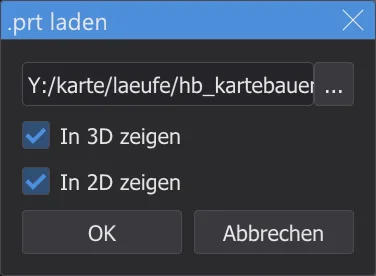
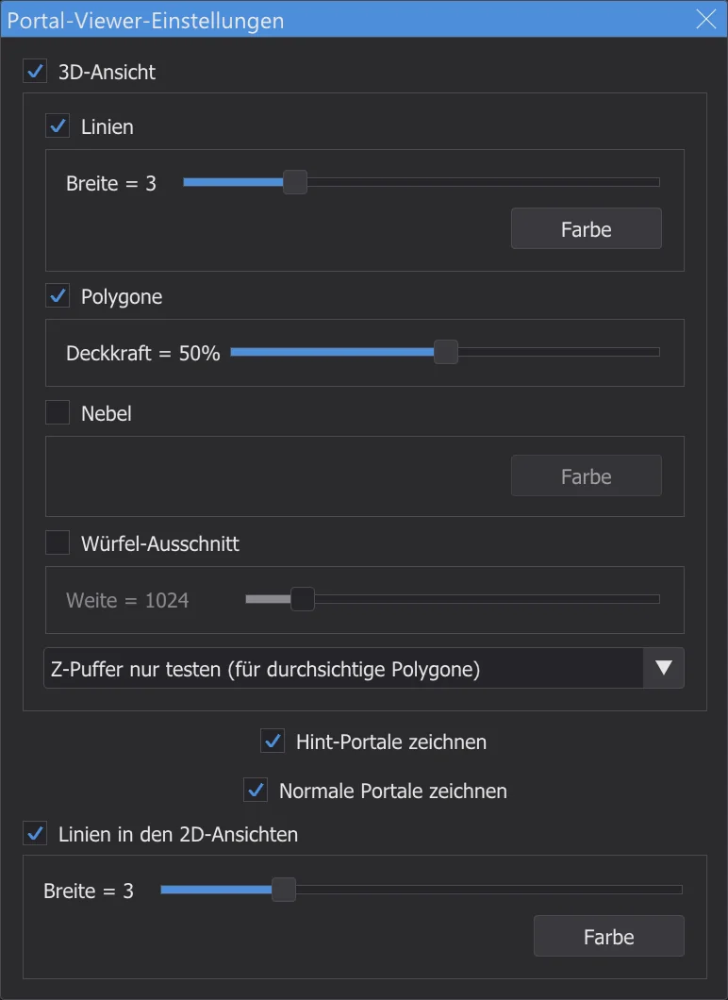
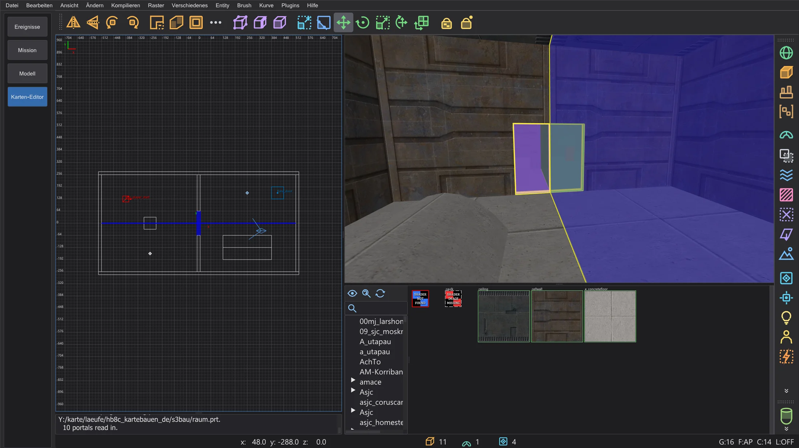
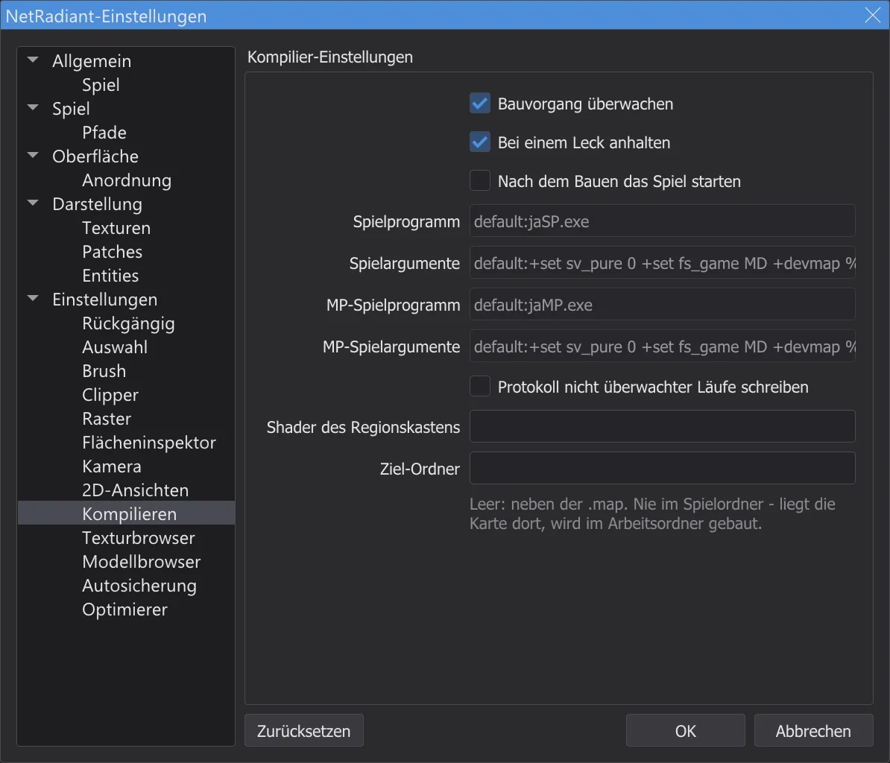

Karten-Editor: Karte bauen
Mach aus der Karte mit q3map2 aus dem Menü Kompilieren eine spielbare .bsp: es läuft im Hintergrund mit seiner Ausgabe in der Konsole, zeigt Lecks als rote Linie und auf Wunsch die Portale und schreibt nie in den Spielordner.
Das Menü ⟦Kompilieren⟧#

Jeder Eintrag führt einen oder mehrere q3map2-Befehle auf der Karte aus. Der Kartencompiler bhed_q3map2.exe ist q3map2 aus NetRadiant-Custom, mit dem Programm gebaut und neben behaved.exe ausgeliefert; er liefert dieselben Ergebnisse. Letzten Build ausführen (F5) wiederholt den letzten Eintrag. Anpassen öffnet den Dialog Build-Menü: Einträge und ihre Befehle lassen sich anlegen (Doppelklick auf +), umbenennen, durch Ziehen umordnen (mit Strg kopieren) und löschen; Build-Variablen zeigt die Variablen wie [MapFile] und [q3map2]. Das Menü wird beim Schließen des Karten-Editors gespeichert.

Die drei Stufen#
| Stufe | Was sie tut |
|---|---|
BSP (-meta) | Macht aus Brushes und Patches den BSP-Baum und die Flächen, schreibt .bsp, .prt und .srf. Ist die Karte nicht dicht, hält sie mit einem Leck an. |
VIS (-vis) | Berechnet, welche Bereiche einander sehen können, damit das Spiel weniger zeichnet. Braucht die Portaldatei der BSP-Stufe. |
LIGHT (-light) | Brennt das Licht der Lichtentities und des Himmels in Lightmaps und das Lichtgitter. |
[Test] Quick and Crude läuft alle drei Stufen schnell für einen ersten Blick, [Final] Fast und [Final] Extreme Quality geben dem Licht seine richtige Qualität. Die einzelnen Stufen helfen, wenn man an einem Teil arbeitet, zum Beispiel nur Single: light stage nach dem Verschieben von Lichtern.
Während es baut#

- 1
Zuerst wird die Karte gespeichert (eine unbenannte fragt nach einem Namen). Mit einer Region wird nur die Region gebaut (
<Karte>.reg). - 2
q3map2 startet ohne Fenster und meldet sich über eine lokale Verbindung zurück, wie bei NetRadiant-Custom. Warnungen erscheinen gelb, Fehler rot; ein Fehler hält die übrigen Schritte an.
- 3
Du kannst weiterarbeiten - umsehen, auswählen, bearbeiten. Kompilieren > Bauen abbrechen beendet q3map2.
- 4
Am Ende nennt eine Zeile Eintrag, Schritte und Zeit - und die Rückgabe von q3map2, wenn sie nicht 0 war.

Die Konsole nach [Final] Fast.

junk.txt im Einstellungsordner.Lecks finden#

Das Innere einer Karte muss von Brushes dicht umschlossen sein. Findet q3map2 einen Weg von einer Entity ins Leere, hält die BSP-Stufe mit MAP LEAKED (rot) an, und die Leck-Linie erscheint rot in den 2D-Ansichten und der Kamera. Das Q3Map-Debugfenster nennt die Entity, aus der es leckt - ein Klick wählt sie.
| Strg+Umschalt+K | Nächste Leckstelle: Kamera und 2D-Ansichten zum nächsten Punkt der Linie, Blick an ihr entlang |
| Strg+Umschalt+L | Vorige Leckstelle: zurück zum vorigen Punkt |
Folge der Linie, bis sie die Karte verlässt - dort ist das Loch. Schließe es und baue noch einmal. Datei > Pointfile (Leck-Linie) schaltet die Linie aus und ein (sie liest <Karte>.lin); Speichern nimmt sie weg.
Portale anzeigen#




Portale sind die Öffnungen zwischen den Bereichen, mit denen die VIS-Stufe rechnet. Plugins > prtview > Load .prt file lädt die Portaldatei der letzten BSP-Stufe (In 3D zeigen, In 2D zeigen): in der Kamera ist jedes Portal ein farbiges, halb durchsichtiges Polygon mit Umriss, in den 2D-Ansichten eine blaue Linie. Viele kleine Portale, wo der Spieler weit sieht, machen die Karte langsam - Hint- und Detail-Brushes helfen. Configure Portal Viewer stellt Farben, Linienbreiten, Deckkraft, Nebel und einen Ausschnitt-Würfel ein; Toggle portals (3D)/(2D) und Unload .prt file schalten die Anzeige.

Wohin die Dateien kommen#

Die .bsp und die anderen Dateien entstehen neben der .map, wie bei NetRadiant-Custom. Ziel-Ordner auf der Seite Kompilieren legt sie stattdessen in einen Ordner deiner Wahl (die Karte wird dorthin kopiert und dort gebaut). In den Spielordner wird nie geschrieben: liegt die Karte oder der Ziel-Ordner dort, wird in einem Arbeitsordner im Einstellungsordner gebaut, und die Konsole sagt es.
Im Spiel testen#
- 1
Kopiere die gebaute
<Name>.bspin den Ordnermapsdes Spiels, zum BeispielGameData\base\maps(mit einer Mod: deren Ordner, z. B.MD\maps). Der Karten-Editor tut das nicht selbst - er schreibt nie in den Spielordner. - 2
Starte das Spiel selbst, öffne die Konsole mit Umschalt+~ und tippe
devmap <Name>- den Namen ohne.bsp.devmaperlaubt auch Cheats wienoclipundgodzum Umsehen. - 3
Nach dem nächsten Bauen die
.bspwieder kopieren und noch einmaldevmap <Name>tippen - das Spiel lädt die neue Fassung.
+devmap <Name>, wie bei NetRadiant-Custom - die .bsp muss dann schon in einem Ordner liegen, den das Spiel durchsucht.AutoCaulk#
Brush > Auswahl automatisch caulken (F4) gibt jeder Fläche der gewählten Brushes, die von innen nicht zu sehen ist, die Caulk-Textur - weniger Flächen, eine schnellere Karte. Stell die Kamera in die Auswahl; q3map2 entscheidet, welche Flächen verdeckt sind. Ein Rückgängig-Schritt nimmt es zurück.